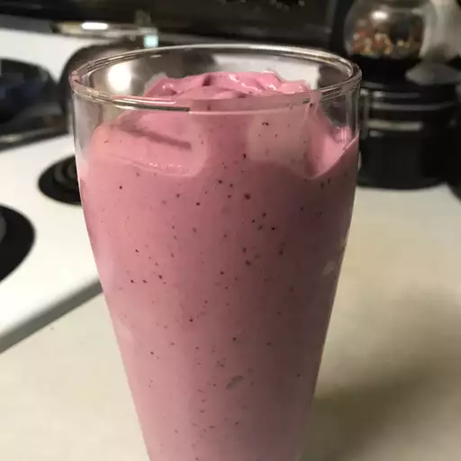

fruit and yogurt smoothie

fruit-and-yogurt-fruit-and-yogurt
- 1 cup strawberries
- banana
- ½ cup yogurt
- ¼ cup pineapple juice
- 1 ½ teaspoons white sugar
- 1 teaspoon orange juice
- 1 teaspoon milk
Directions
step:1
Combine strawberries, banana, yogurt, pineapple juice, sugar, orange juice, and milk in a blender; blend until smooth.